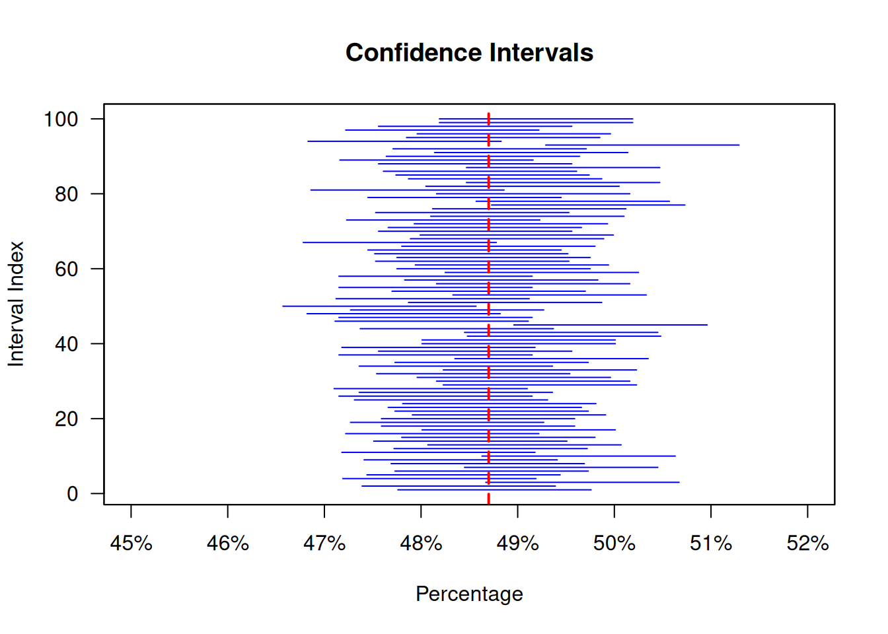

Code
barplot(c(0.513, 0.487), names.arg = c("0 (boy)", "1 (girl)"),
main = "Probability Distribution: Sample size 1",
xlab = "Proportion of girls",
ylab = "Probability")
In the last unit on probability we analyzed randomizing devices such as dice and coins. We have assumed the in these cases that we can enlist all the possible outcomes that might potentially be observed and we can attach chances or probabilities to these outcomes. One example was 1/2 for a fair coin coming up Heads, or 1/6 for the die showing any of its faces after a throw, or 1/36 for two dice showing one of the possible combinations of points.
When we attach to each of these outcomes some quantity, for example 1 for Heads and 0 for Tails, probability theorists say that we have a random variable with a probability distribution. The randomizing device is such that it is ensured that the observation is generated at random from this distribution. This probability distribution can be described by parameters, such as the mean, for example in the case of the Poisson Distribution, or the mean and the standard deviation in the case of the normal distribution. We also learned how we can use R to draw data points from a probability distribution described by its parameters.
The usual situation, we face in statistics is that we have to deal with lots of data and we give an overall description of these data usually by a summary statistics like the mean, the median or other percentiles.
A fundamental step and a key idea in statistics, where probability and statistics come together, is the idea that we can view a particular statistics like the mean also as a random variable and its values as draws from its own probability distribution. Using this perspective allows statisticians to assess the uncertainty of estimates of population parameters using probability theory. This is a conceptually challenging and difficult idea, which we are going to develop in this unit.
We have encountered a method to achieve such a quantification of uncertainty when we discussed the bootstrap in unit 5. There we took repeated samples with replacement from the distribution of human height data and computed the mean height at each step. In this way we generated a distribution of the mean height that gave us some idea about the precision of this estimate.
In contrast to bootstrapping which is a computer intensive simulation technique, probability theory provides an alternative approach to give a mathematical answer to the same question: How confident can we be about the precision of our statistics? In this approach we can save on computing resources but we need - as in any mathematical theory - assumptions and we need to think about whether these assumptions are justified in each single situation where we apply the theory.
In this unit you will learn how we can use probability theory to quantify the uncertainty of a sampling statistics as a measure about the true underlying paremter of a population, such as the mean or a proportion. This is an important, though conceptually challenging idea.
The first step in this process is that we learn how a known population gives rise to different samples.
We discuss the notions of expected value and the standard error of a random variable and we analyze the expected value and the standard error of a sum and a proportion using box-models and the idea of drawing at random with replacement from a box.
We learn what chance error is and how the square root law can describe the chance error of sums and proportions for situations that can be described as random draws with replacement from a box.
A key step in this analysis is an insight known as the central limit theorem which says that when we draw at random with replacement from a box, the probability histogram for the sum will follow the normal curve, even is the contents of the box is not normally distributed, provided the number of draws is large enough.
This is a key step in bringing probability and statistics together for it helps us to work out the accuracy of estimates of the sum, the average and or proportions using the normal distribution.
Random drawing with replacement from a box-model is our key model of a random variable, which arises if we attach to each outcome of a random process a quantity.
Expected value of the sum of random draws of tickets from a box made with replacement is equal to \((\text{the number of draws}) \times (\text{average of the box})\)
Square root law: When drawing at random with replacement form a box of numbered tickets, the standard error for the sum of the draws is \(\sqrt{\text{number of draws}} \times (\text{standard deviation of the box})\)
Probability histogram represents probabilities, not data. A probability historgam represents chance by area.
Central limit theorem When drawing at random with replacement from a box, the probability histogram for the sum will follow the normal curve, even is the contents of the box is not normally distributed, provided the number of draws is large enough.
Confidence interval: A confidence interval is used when estimating an unknown parameter from sample data. The interval gives a range for the parameter, and a confidence level that the range covers the true value.
In unit 3 we talked about random samples, where we draw a sample from a population and want to learn from the sample statistics about the value of the statistics - say a proportion - in the underlying population. For this we need to know how a known population gives rise to different samples. Let us think about this problem in terms of concrete example.
In a random sample of 1000 newborn babies we find that there are 487 girls and 513 boys. What can we say about the proportion of baby boys and girls in the population of all newborns in a country?
Assume we draw random samples of different sizes from a population of newborns in a country containing exactly 48.7 % baby girls an 51.3 % baby boys. We would like to find the probability of observing possible proportions of baby girls and baby boys. 1
1 The probabilities we use here are actually the natural probabilities that a baby is a girl or a boy. These probabilities have been historically very stable. The outcomes are also independent across births. The independence assumption is justified when we abstract for the moment from rare events such as twins and triplets. In this case things are a bit more complicated but let’s not worry about these special cases for now.
Now, of course, this is not the situation we encounter in practice. In practice we can only use the sample to learn about the unknown population. But we can only get to such a conclusion by first exploring how a known population gives rise to different samples. Let’s imagine an example to understand this distinction better.
We could think of the situation in terms of a box model. Think of the population of 10 newborns as being in a box where we know that 4 babies are girls and 6 are boys and we draw a sample of size 4 from this box at random.
This is the first situtuation. We have a population with known distribution and draw at random from this population. Using probability theory we can work out the probabilities of getting different proportions of baby girls and boys.
The situation we encounter in the practice of statistics is, however, rather the second situation. We have only a sample and want to learn about the population. Look at the following picture.
In order to understand the first situation we can help ourselves via the application of probability theory. This will be a necessary step to understand how probability and statistics hang together and by this insight understand the second situation.
Let us work out an answer to the first situation now. Suppose the sample has a size of only 1. Then the proportion of baby girls must be either 0 or 1 depending whether we have selected a girl or a boy. These events occur with probability 0.513 (boy) ans 0.487 (girl).
The resulting probability distribution is shown here:
barplot(c(0.513, 0.487), names.arg = c("0 (boy)", "1 (girl)"),
main = "Probability Distribution: Sample size 1",
xlab = "Proportion of girls",
ylab = "Probability")
Suppose our sample consists of two babies drawn at random from the population of newborns. Then the proportion of girls will be either 0 (both boys), 0.5 (one girl and one boy) or 1 (both girls).
Let’s work out the probabilities of these proportions: The probability of two boys must be \(0.513 \times 0.513 = 0.263\). (multiplication rule and independence) The probability of two girls must be \(0.487 \times 0.487 = 0.237\) and so the probability of one of each must be \(1 - 0.263 - 0.237 = 0.5\) (Complement rule). The resulting probability distribution is here.
barplot(c(0.236, 0.5, 0.237), names.arg = c("0 (both boys)", "0.5 (boy and girl)", "1 (both girls"),
main = "Probability Distribution: Sample size 2",
xlab = "Proportion of Girls",
ylab = "Probability")
We could now use probability theory to work out the probability distribution for even larger and larger samples. How would we do that?
Suppose we would like to find the probability that in a random sample of 5 newborns we have two boys and then three girls, like, for example, this: BBGGG. There are, of course, many other ways in which there can be two boys in a sample of five, for example GGGBB.
To solve the problem using probability theory we must first find all the possible ways two boys and three girls can occur, compute the chance of each and then use the addition rule to add up the chances. Let us skip the complicated task of finding all the possible ways and concentrate on the second task first.
The chance of a pattern BBGGG is: \(0.513 \times 0.513 \times 0.487 \times 0.487 \times 0.487 = (0.513)^2 \times (0.487)^3\). This follows from the multiplication rule as well as from the assumption of independence. Similarly the chance of GGGBB would compute as: \(0.487 \times 0.487 \times 0.487 \times 0.513 \times 0.513 = (0.487)^3 \times (0.513)^2\), so exactly the same chance.
Now, how many patterns are there? The number of patterns is given by the binomial coefficient: \[\begin{equation*} \frac{5 \times 4 \times 3 \times 2 \times 1} {(2 \times 1) \times (3 \times 2 \times 1)} = 10 \end{equation*}\] There are 10 different patterns of 2 boys and three girls, so the chance is: \(10 \times (0.513)^2 \times (0.487)^3\), or roughly 30 %.
Binomial coefficientas look messy and so mathematicians have invented a cleaner notation using an exclamation mark ! as a special symbol to indicate the result of multiplying together a number and all the numbers which come before it. For example \[\begin{eqnarray*} 1! &=& 1\\ 2! &=& 2 \times 1 = 2 \\ 3! &=& 3 \times 2 \times 1 = 6 \\ 4! &=& 4 \times 3 \times 2 \times 1 = 24 \end{eqnarray*}\] The exclamation mark reads factorial and sure enough there is an R function for it:
factorial(4)[1] 24All these arguments and reasoning can be packed into a formula giving the chance that an event will occur exactly \(k\) times out of \(n\). This is
The chance that an event \(X\) will occur exactly \(k\) times out of \(n\) is given by the binomial formula \[\begin{equation} P(X = k) = \frac{n!}{k!(n-k)!}p^k(1-p)^{n-k} \end{equation}\]
In this formula, \(n\) is the number of trials, \(k\) is the number of times the event is to occur, an \(p\) is the probability that the event will occur on any particular trial.
Mathematicians often use a particular notation for the binomial coefficient in this formula, so the formula looks like: \[\begin{equation} P(X = k) = \binom{n}{k}p^k(1-p)^{n-k} \end{equation}\] where \(\binom{n}{k}\) denotes the binomial coefficient.
The assumptions are:
R has a built in function for the binomial formula and we can use it for probability computations where it is involved. This function is called dbinom() and is to be used like this:
The chance that an event will occur exactly \(k\) times out of \(n\) is given by the binomial formula implemented in R as
dbinom(x, # X-axis values (x = 0, 1, 2, ..., n)
size, # Number of trials (n > = 0)
prob, # The probability of success on each trial
log = FALSE) # If TRUE, probabilities are given as logLet us demonstrate its use this to work out the theoretical probabilities for the proportion of girls in a sample of 10 as in the example in our picture where we had a proportion of 0.5 for girls and 0.5 for boys in the sample. We show here the probabilties for all possible cases (0, 1, 2, 3, 4, 5, 6, 7, 8, 9 or 10 girls).
barplot(dbinom(seq(0,10, by = 1), 10, 0.487),
names.arg = as.character(seq(0,10, by = 1)/10),
main = "Probability distribution: Sample size 10",
xlab = "Proportion of girls",
ylab = "Probability")
Let’s check your understanding of the formula: Denote the event that a randomly chosen newborn will be a girl by \(X\). According to the binomial formula the probability that in a sample of 10 newborns we will have, say four girls, given the probability that a baby is a girl of \(0.487\) is:
\[\begin{eqnarray*} P(X = 2) &=& \binom{10}{4} \times 0.487^4 \times (1-0.487)^{(10-4)} \\ &=& \frac{10!}{4!(10-4)!} \times 0.487^4 \times (1-0.487)^{(10-4)} \\ &=& \frac{10 \times 9 \times 8 \times 7 \times 6 \times 5 \times 4\times 3\times 2\times 1}{( 4 \times 3\times 2 \times 1) ( 6 \times 5 \times 4 \times 3 \times 2 \times 1)} \times 0.487^4 \times (1-0.487)^{(5-2)} \\ &=& 0.2152977 \end{eqnarray*}\]
This is what we get if we do the computation by hand and using pencil and paper. When we use R we should get the same result:
dbinom(4,10,0.487)[1] 0.2152977Now look at the barplot: If we have 4 girls out of 10 the proportion of girls in the sample would be \(4/10\) or \(0.4\). The theoretical probability for this proportion would be about \(0.22\). This is exactly what you see in the barplot.
For the plot we have computed these probabilities and proportions for all constellations 0, 1, 2, 3, 4 up to 10 girls. We have created this sequence with the R seq() function. For the names.arg argument we have created the same sequence but divided every element of the sequence by 10 to express the number as a proportion and then transformed the numbers to a vector of type character by the as.character() function, since names.arg requires a vector of characters.
I think by now you understand how we apply the formula both in math and in R to figure out the probabilities. Here we do the same exercise for \(n= 100\) and \(n=1000\). We do not show the code anymore her just the plots (try it!):
par(mfrow = c(1,2))
barplot(dbinom(seq(0,100, by = 1), 100, 0.487), names.arg = as.character(seq(0,100, by = 1)/100),
main = "Sample size 100",
xlab = "Proportion of girls",
ylab = "Probability")
barplot(dbinom(seq(0,1000, by = 1), 1000, 0.487), names.arg = as.character(seq(0,1000, by = 1)/1000),
main = "Sample size 1000",
xlab = "Proportion of girls",
ylab = "Probability")
When we draw random samples, like in this example drawing babies from a population of newborns, then the chance process of random sampling delivers a number and then another and then another and so on, in the specific example, 1 for a girl and 0 for a boy.
Mathematicians call the value around which these number vary the expected value, and the average size of how much the numbers are off the the expected value the standard error. The formulas for the expected value and the standard error depend on the chance process which generates the numbers.
The figures above have two notable features.
The probability distribution for the proportion tends to become regular, symmetric and bell shaped, like a normal curve. This is something we already observed when we discussed the bootstrap.
The distribution gets tighter as the sample size increases.
But before we discuss these ideas and their implications further, let us unpack the notions of expected value and standard error a bit more.
The formula for the expected value depends on the chance process which generates the random numbers. Let us introduce the general formulas by another box model example.
Suppose we make hundred random draws with replacement from the box, containing the following tickets, symbolized by an R vector called box and the draws symbolized by an R vector called draws.
box <- c(0,2,3,4,6)
draws <- sample(box, size = 100, replace = TRUE)About how large should this sum be? The draws could turn out either 0, 2, 3, 4, or 6. Each outcome has a probability of 1/5, so they should come up around 1/5th of the draws. So in 100 draws we should see:
\[\begin{equation} 20 \times 0 + 20 \times 2 + 20 \times 3 + 20 \times 4 + 20 \times 6 = 300 \end{equation}\]
This is called the expected value.
The formula has two ingredients:
The expected value for the sum of draws made at random with replacement from a box equals
\[\begin{equation} (\text{number of draws}) \times (\text{average of box}) \end{equation}\]
The logic here is that the average of the box amounts to \[\begin{equation} \frac{0+2+3+4+6}{5} = 15/5 = 3 \end{equation}\] On average each draw adds around 3 to the sum. With 100 draws then the sum must be around \(100 \times 3 = 300\).
See what we have in our actual random draws:
sum(draws)[1] 328pretty close.
We have seen before that the expected value of the sum of the tickets in the box is \(300\). The actual outcome of the random process was, however, 328, which is 28 off the expected value.
This is a chance error. The sum will be off the expected value by the size of a chance error, so that:
\[\begin{equation} \text{sum} = \text{expected value} + \text{chance error} \end{equation}\]
How big is this chance error likely to be?
The sum is likely to be around its expected value but to be off by a chance error similar in size to the standard error.
There is also a formula to use when we compute the standard error for a sum of draws made at random from a box with replacement. This formula plays a key role in the statistical procedures we discuss in this and in the next unit.
When drawing at random with replacement form a box of numbered tickets, the standard error for the sum of the draws is \[\begin{equation} \sqrt{\text{number of draws}} \times (\text{standard deviation of box}) \end{equation}\]
This formula has two ingredients:
If there is a lot of spread in the box, the standard deviation is big and it is hard to predict how the draws will turn out. So the standard error must be big too.
The sum of two draws has more variability than one draw. The sum of 100 draws is still more variable. As the number of draws grows the sum gets harder to predict, the chance error gets bigger and so does the standard error. However the standard error goes up slowly with a factor equal to the square root of the number of draws. With 100 draws, therefore the sum is 10 times more variable than with a single draw.
Note that the standard deviation and the standard error are two different concepts:
The standard deviation is for the list of numbers in the box, in our example \(0,2,3,4, 6\). This is 2
The standard error refers to the outcome of the chance process, in our case drawing at random from the box of numbers. This is for our particular example 20
A statistics, like the mean or a proportion, when viewed as a random variable has a standard error. This is to distinguish from the standard deviation of the population distribution from which this statistics derives.
We began our discussion with 100 random draws with replacement from the box
box <- c(0,2,3,4,6)The expected value of the sum is 300. The sum will be around 300 but will be off by a chance error. The average in the box is
mean(box)[1] 3and the standard deviation is
sqrt( ((0-3)^2 + (2-3)^2+ (3-3)^2 + (4-3)^2 + (6-3)^2)/5)[1] 2This measures the variability in our box. According to the square root law the sum of 100 draws is \(\sqrt{100} = 10\) times more variable. The standard error (SE) of the sum is the \(10 \times 2\) or \(20\). The likely chance error is about 20. The sum of draws should be around 200 give or take 20.
Let us use the compute again to show what this means empirically. When we asked the computer to draw 100 times with replacement from the box we got a list of successive draws, which we could visualize as follows:
res <- split(draws, ceiling(seq_along(draws)/5))
df <- as.data.frame(do.call(rbind, res))
names(df) <- c("Element 1", "Element 2", "Element 3", "Element 4", "Element 5")
rownames(df) <- NULL
knitr::kable(df[ , c("Element 1", "Element 2", "Element 3", "Element 4", "Element 5")])| Element 1 | Element 2 | Element 3 | Element 4 | Element 5 |
|---|---|---|---|---|
| 4 | 4 | 6 | 4 | 0 |
| 3 | 4 | 4 | 4 | 0 |
| 6 | 6 | 3 | 6 | 2 |
| 0 | 2 | 3 | 6 | 0 |
| 4 | 2 | 0 | 0 | 0 |
| 6 | 2 | 2 | 6 | 6 |
| 4 | 4 | 2 | 4 | 6 |
| 3 | 4 | 2 | 4 | 0 |
| 2 | 4 | 2 | 0 | 6 |
| 0 | 0 | 6 | 0 | 6 |
| 3 | 0 | 2 | 4 | 0 |
| 3 | 6 | 6 | 3 | 2 |
| 0 | 2 | 4 | 4 | 3 |
| 6 | 4 | 2 | 0 | 6 |
| 6 | 4 | 6 | 6 | 4 |
| 2 | 3 | 4 | 2 | 6 |
| 3 | 4 | 6 | 4 | 6 |
| 2 | 4 | 2 | 3 | 4 |
| 6 | 0 | 0 | 4 | 6 |
| 6 | 2 | 3 | 2 | 4 |
The sum of these draws is 328, this is 28 off the expected value.
Now if we do such an experiment 100 times, we get something like the following table. I don’t show the code but you can try to refresh your knowledge of writing a loop here.
repetitions <- vector("list", 100)
for(i in seq_along(1:100)){
repetitions[[i]] <- sum(sample(box, 100, replace = TRUE))
}
# perpeare a table
out <- split(repetitions, ceiling(seq_along(repetitions)/20))
aux <- lapply(out, unlist) |> as.data.frame()
df <- data.frame(Round = 1:20, Sum = aux[,1], Round = 21:40, Sum = aux[, 2], Round = 41:60, Sum = aux[, 3], Round = 61:80, Sum = aux[, 4], Round = 81:100, Sum = aux[,5])
knitr::kable(df, col.names = c("Round", "Sum",
"Round", "Sum",
"Round", "Sum",
"Round", "Sum",
"Round", "Sum")
)| Round | Sum | Round | Sum | Round | Sum | Round | Sum | Round | Sum |
|---|---|---|---|---|---|---|---|---|---|
| 1 | 305 | 21 | 338 | 41 | 281 | 61 | 261 | 81 | 294 |
| 2 | 330 | 22 | 338 | 42 | 300 | 62 | 295 | 82 | 300 |
| 3 | 312 | 23 | 365 | 43 | 321 | 63 | 309 | 83 | 288 |
| 4 | 305 | 24 | 310 | 44 | 299 | 64 | 310 | 84 | 306 |
| 5 | 275 | 25 | 299 | 45 | 268 | 65 | 246 | 85 | 303 |
| 6 | 282 | 26 | 312 | 46 | 285 | 66 | 274 | 86 | 321 |
| 7 | 350 | 27 | 275 | 47 | 257 | 67 | 286 | 87 | 285 |
| 8 | 323 | 28 | 322 | 48 | 295 | 68 | 316 | 88 | 283 |
| 9 | 294 | 29 | 307 | 49 | 292 | 69 | 276 | 89 | 280 |
| 10 | 315 | 30 | 309 | 50 | 301 | 70 | 292 | 90 | 306 |
| 11 | 295 | 31 | 294 | 51 | 274 | 71 | 312 | 91 | 305 |
| 12 | 312 | 32 | 315 | 52 | 296 | 72 | 324 | 92 | 265 |
| 13 | 283 | 33 | 293 | 53 | 305 | 73 | 289 | 93 | 305 |
| 14 | 281 | 34 | 294 | 54 | 306 | 74 | 302 | 94 | 320 |
| 15 | 332 | 35 | 274 | 55 | 302 | 75 | 300 | 95 | 334 |
| 16 | 283 | 36 | 286 | 56 | 250 | 76 | 323 | 96 | 288 |
| 17 | 283 | 37 | 322 | 57 | 279 | 77 | 335 | 97 | 337 |
| 18 | 282 | 38 | 271 | 58 | 297 | 78 | 330 | 98 | 329 |
| 19 | 296 | 39 | 278 | 59 | 309 | 79 | 290 | 99 | 273 |
| 20 | 299 | 40 | 325 | 60 | 280 | 80 | 268 | 100 | 293 |
The observed values in this table have a remarkably low spread around the expected value of 300. It is rare that they are more than 2 or three standard errors away from the expected value. In principle they could be as small as 0 and as large as 600 but most of them are between 2.5 standard errors, actually:
x <- mean(unlist(repetitions) <= (300 + 20*2.5) &
unlist(repetitions) >= (300 - 20*2.5))98 % are within these bounds.
When we make a large number of draws at random with replacement what is the chance that the values of the sum are within a given range ? Historically mathematicians detected the normal curve while working out problems of this kind. Let’s keep the logic of why the normal curve comes into play with a large number of draws aside for the moment and briefly discuss how it works.
Think about our box from before.
box <- c(0,2,3,4,6)When we tell the computer to repeatedly sample from this box with replacement and take the sum, he prints or stores the result over and over again. What percentage of numbers should be between 270 and 330?
Note that each sum will be somewhere between 0 and \(100 \times 6\) or 600. Let us assume we want to know the chance that the sum is somewhere between 270 and 330. Here is a picture. We convert first to standard units and then use the normal curve. 
pnorm(1.5) - pnorm(-1.5)[1] 0.8663856Let’s check with the data
y <- mean(unlist(repetitions) <= (300 + 30) &
unlist(repetitions) >= (300 - 30))This is 0.85. A pretty good approximation.
Why do we need a conversion to standard units? Here we could also use the normal distribution with mean 300 and standard deviation 30 to derive the same result. To see this, consider:
pnorm(330, mean = 300, sd = 20) - pnorm(270, mean = 300, sd = 20)[1] 0.8663856Same result. The probability does not depend on the units in which the variables are measured. There is an infinity of normal distributions for each different pair of means and standard deviations. For the computer this is no problem to handle, so in the computer age in some cases we do not need to convert to standard units.
However before the age of computers probabilities of the normal distribution were printed in tables, for the standard normal distributions and you had to use the table to compute probabilities for intervals of normally distributed random variables. Such a table looks like this:
The value in the table correspond to the area under the normal curve above a certain value \(z\). So how do we read the table for our computation? The area above \(z = 1.5\) is 0.0668 (table row 16). The area above 0 is by the symmetry of the normal curve 0.5. Hence the area between 0 and 1.5 must be 0.4332 and by symmetry again, the area above -1.5 and below 0 must then by twice this amount which gives 0.8664, which is the same answer than we got from the computer.2
2 There are other scenarios where standardization is useful even if we have access to a computer. One is when we compare variables with different normal distributions relative to each other. One example would be, when the grades of the astronomy course and the grades of the statistics course are normally distributed but with different means and standard deviations. Then to compare the scores you need to standardize. For instance, suppose a student is scoring 60 in Astronomy with the mean score of the class being 40, and scoring 65 at statistics with the mean score of the class being 80. Given the “raw” scores, one would say that the student performed better in statistics than in astronomy. However, taking into consideration the peers, it is clear that the student performed relatively better in astronomy than in statistics. Furthermore z-scores also allow to compare variables that would be impossible to compare otherwise because they have different units. Say you would like to know whether somebody is more extreme in terms of salary than in terms of running speed, then there would be no way to know this except when you standardize or use z-scores. This would then tell you how far this individual is above or below average in both aspects.
Finding standard errors can be computationally intensive, especially for large samples. If the random variable can have only two values, like in the example of boys and girls, there is a short cut.
Assume we interpret a random device which shows a number 1 as indicating a girl and 0 indicating a boy, with the probability of 1 given by 0.487. Then we can use a short cut.
When a list has two different numbers the standard deviation equals: \[\begin{equation} \left(\text{bigger number} - \text{smaller number}) \right) \times \sqrt{\text{share of bigger number} \times \text{share of smaller number}} \end{equation}\]
Say, our box is like before with the baby girls and baby boys. Again, we might think of a box consisting of two values and the probability that a newborn baby will be a girl is 0.487. Then a list of 1000 babies will be a list of binomial random variables, which we can simulate
box <- c("girl", "boy")
outcome <- sample(box, 1000, replace = T, prob = c(0.487, 0.513))If we encode the event girl as 1 and the event boy as 0, then the standard deviation of the list must be according to our short cut formula:
(1-0)*sqrt(mean(outcome == "girl")*mean(outcome == "boy"))[1] 0.4993746With this insight we can treat the binomial case exactly like the box case. All we have to do is to mark the tickets in the box, in our case the girls and boys, write 1 on the tickets that you count and 0 on the others and then your expected value of a sum of n tosses will be:
\[\begin{eqnarray} \text{expected value}&=& \text{number of draws} \times \text{share of} \, 1.\\ \text{standard error}&=& \sqrt{\text{number of draws}} \times \sqrt{\text{share of 1}\times \text{share of 0}} \end{eqnarray}\] This means that in our case of 100 draws the expected value of girls will be \(1000 \times 0.487 = 487\) with a standard error of \(\sqrt{1000}\times \sqrt{0.487 \times 0.513} = 15.8\) or about 16.
Look at the number from the simulation:
mean(outcome == "girl")[1] 0.475sqrt(1000)*sqrt( mean(outcome == "girl")*(mean(outcome == "boy")))[1] 15.79161This is very good. Now for computing probabilities also here we can - for large enough samples - use the normal approximation. Say, we would like to know what is the probability that we would observe a share of girls between 0.4 and 0.5?
With the computer the exact computation is easy, because all the formulas we need are implemented. We just add up all the binomial probabilities from 0 to 500 and add up from 0 to 400 and take the difference:
sum(dbinom(0:500, size = 1000, prob = 0.487)) -
sum(dbinom(0:400, size = 1000, prob = 0.487))[1] 0.8034914Using the normal approximation with mean 487 and standard error 15.8, let us convert to z scores, to get \((400 - 487)/15.8 = -5.5\) and \((500 - 487)/15.8 = 0.82\) in standard units. Thus we get
pnorm(0.82) - pnorm(-5.5)[1] 0.7938919which is a stunningly close approximation.
Such statistical regularities can sometimes bring insight into social processes. For example with the natural probabilities that a baby will be a girl with 0.487 and a boy with 0.513 the sex ratio at birth should be expected to be \(0.513/0.487 = 1.053\). India, in contrast hat a sex ratio at birth of 1.063.
The number of life births in 2022 in India was according to the demographic data of the US Census international database 23.377.786. With the natural probabilities we expect for such a population 11.384.982 baby girls in this cohort of 2022 babies with a standard error of \(\sqrt{23377786 \times 0.487 \times 0.513} = 2417\). Thus using the normal approximation the ratio would be with 95 % probability within the interval \([11.384.982 - 2 \times 2417 , 11.384.982 + 2 \times 2417]\), or within \([0.4868, 0.4872]\). With a ratio of boys to girls of 1.063 the share of girls would be 0.4847. This proportion is more than two standard deviations lower compared to what would be expected based on the natural probabilities of 0.487 and 0.513. There is a debate among demographers whether this discrepancy in girl births might be due to infanticide of selective abortion of female fetuses.
When we get numbers from a chance process, the expected value and the standard error give us an impression where the numbers will be. If we want to get the full picture, however, we get it from a probability histogram.
A probability histogram represents probabilities, not data.
A probability histogram represents chance by area.
Here is an example from gambling:
Craps is a casino game where you throw two dice and gamblers bet on the sum of numbers the two dice will show. We can find the chances of the combinations by probability theory (try it). But here we will simulate using concepts we already know and learend in this course. We write a function tossing two dice and sum up their outcomes and repeat this many times and plot the outome (try it)
craps <- function(){
# construct a die
die <- 1:6
# roll twice
out <- sample(die, 2, replace = T)
# sum the outcome of the rolls
sum(out)
}
crap_sim <- replicate(100, craps())
#hist(crap_sim, breaks = seq(1.5, 12.5, by = 1), freq = F, plot = F)
h100 <- hist(crap_sim, breaks = seq(1.5, 12.5, by = 1), plot = F)
h100$counts <- h100$counts/sum(h100$counts)
plot(h100,
xlab = "Number of dots",
ylab = "Percent",
main = "One Hundered Repetitions",
axes = F,
xlim = c(0,13),
ylim = c(0,0.3))
# add labels below each column
axis(1, at = 2:12, labels = 2:12)
axis(2, at =c(0,0.1, 0.2, 0.3), labels = c("0 %","10 %", "20 %", "30 %"))
Now increase the repetitions to 1000
crap_sim <- replicate(1000, craps())
#hist(crap_sim, breaks = seq(1.5, 12.5, by = 1), freq = F, plot = F)
h1000 <- hist(crap_sim, breaks = seq(1.5, 12.5, by = 1), plot = F)
h1000$counts <- h1000$counts/sum(h1000$counts)
plot(h1000,
xlab = "Number of dots",
ylab = "Percent",
main = "One Thousand Repetitions",
axes = F,
xlim = c(0,13),
ylim = c(0,0.3))
# add labels below each column
axis(1, at = 2:12, labels = 2:12)
axis(2, at =c(0,0.1, 0.2, 0.3), labels = c("0 %","10 %", "20 %", "30 %"))
And to 10000
crap_sim <- replicate(10000, craps())
#hist(crap_sim, breaks = seq(1.5, 12.5, by = 1), freq = F, plot = F)
h10000 <- hist(crap_sim, breaks = seq(1.5, 12.5, by = 1), plot = F)
h10000$counts <- h10000$counts/sum(h10000$counts)
plot(h10000,
xlab = "Number of dots",
ylab = "Percent",
main = "Ten Thousand Repetitions",
axes = F,
xlim = c(0,13),
ylim = c(0,0.3))
# add labels below each column
axis(1, at = 2:12, labels = 2:12)
axis(2, at =c(0,0.1, 0.2, 0.3), labels = c("0 %","10 %", "20 %", "30 %"))
You can see that the probability histograms observed from the random experiments of throwing the two dice 100, 1000 and 10000 times get closer and closer to the ideal probability histogram, where the relative frequency of events from the random experiment come arbitrarily close to the theoretical probabilities.
There are 6 events in 36 where the sum of the die could be 7 (try to convince yourself!). This is 16 2/3 %. The area of the rectangle over 7 in the probability histogram, therefore equals 16.3%. The total area of all the rectangles sum up to 100 %.
When we discussed the theoretical share of baby girls using the binomial distribution, we saw a remarkable fact:
par(mfrow = c(1,2))
barplot(dbinom(seq(0,100, by = 1), 100, 0.487), names.arg = as.character(seq(0,100, by = 1)/100),
main = "Sample size 100",
xlab = "Proportion of girls",
ylab = "Probability")
barplot(dbinom(seq(0,1000, by = 1), 1000, 0.487), names.arg = as.character(seq(0,1000, by = 1)/1000),
main = "Sample size 1000",
xlab = "Proportion of girls",
ylab = "Probability")
We saw in this example that the variability of the observed proportion gets smaller as the sample size increases. Here the same mechanisms are at work as in the example of craps.
These mechanisms have been first systematically described by is the classic Jacob Bernoulli in the 17th century and the result is termed the law of large numbers or the law of averages.3
3 Jacob Bernoulli, 6 January 1655 – 16 August 1705,was one of the many prominent mathematicians in the Swiss Bernoulli family.  He sided with Gottfried Wilhelm Leibniz during the Leibniz–Newton calculus controversy and was an early proponent of Leibnizian calculus, which he made numerous contributions to; along with his brother Johann, he was one of the founders of the calculus of variations. He also discovered the fundamental mathematical constant e. However, his most important contribution was in the field of probability, where he derived the first version of the law of large numbers in his work Ars Conjectandi.[3]
He sided with Gottfried Wilhelm Leibniz during the Leibniz–Newton calculus controversy and was an early proponent of Leibnizian calculus, which he made numerous contributions to; along with his brother Johann, he was one of the founders of the calculus of variations. He also discovered the fundamental mathematical constant e. However, his most important contribution was in the field of probability, where he derived the first version of the law of large numbers in his work Ars Conjectandi.[3]
The manifestation of this law here is that when we increase the sample, the proportion of girls in the outcome of the random experiment comes closer and closer to the true proportion of 0.487.
In the previous section we discussed the normal approximation when the sample size is large enough. This is also the content of the famous central limit theorem detected in 1733 by Abraham de Moivre. This theorem says:
When drawing at random with replacement from a box, the probability histogram for the sum will follow the normal curve, even is the contents of the box is not normally distributed, provided the number of draws is large enough.
This is a remarkable fact. Whatever the the shape of the population distribution from which each of the original measurements were sampled, for large sample sizes their average can be considered as drawn from a normal curve. This will have a mean that is equal to the mean of the original distribution the standard deviation that has a simple relationship to the standard deviation of the original population It is known, as we discussed before, as the standard error.
Note that the central limit theorem applies to sums but not to other operations, like products. The central limit theorem is the basis for many statistical procedures we discuss in the rest of the units.
How many draws will be needed before we can be confident that we may apply the approximation? There is no general rule. It depends on what is in the box but for most boxes 100 draws will already get sufficienty close.
When a probability histogram follows a normal curve, it can be approximated by the expected value and the standard error.
According to the square root law the expected value and the standard error for a sum can be computed from:
These are the three quantities which determine the behavior of the sum. This is why the standard error of the box is such an important measure of its spread.
Now we see also why in the bootstrap examples we discussed in unit 5, the distribution of the statistics we got from repeated resamples looked more and more like a normal distribution. This is the consequence of the central limit theorem.
This applies also for proportions, because by appropriate labeling of the outcomes a count of proportions can be understood as the means of a binary variable with values 0 and 1.
While the central limit theorem is a remarkable and extraordinary law of nature, the question arises, how this law can help us work out the accuracy of estimates without using the heavy machinery of computer simulation.
We have gone a long way now to discuss how we come from a given probability distribution to the probability of outcomes. We now are ready to discuss the second question, which is the usual situation in statistical practice. We have a single sample and need to say saying something about an underlying population. This is the process of inductive inference, we discussed in unit 3.
Let us now turn the situation around and do not reason from the box to the draws but take the other perspective and reason from the draws to the box. The technique belongs to the key ideas of statistics and we develop it here in a context of polling.
Suppose a vote between two political parties comes up and you want to find out an estimate of the percentage of votes for one of two parties, A and B. Say you were able to draw a random sample from the eligible voters in the district and all have responded truthfully4. Say you have taken a sample of 2500 voters, and in the there are 1328 voters in favor party A. The percentage is: \[\begin{equation} \frac{1328}{2500} \times 100 \% \approx 53 \% \end{equation}\] You have taken the data of the sample to make an estimate but how far wrong this estimate is likely to be? With a box model in mind, you might think of the following procedure. Each respondent with a stated preference for party A is represented as a ticket with a 1 written on it and the others with a ticket with a 0 written on it. The standard error of the box for the sum should be \[\begin{equation} \sqrt{\text{(share of}\, 1's) \times (\text{share of} 0's)} \end{equation}\] But now you are stuck, because you don’t know how the tickets in the box (in the population of voters in the district ) are marked.
4 Of course this is not a realistic scenario in polling. You will have non-responses and people not telling the truth and in practice you have to find methods and ways to deal with all of these aspects. The key principles can, however, be explained also in this idealized and simplified case
Survey organisations lift themselves out of the dilemma, very much like we did in unit 5, when we learned about the bootstrap. They substitute the fractions observed in the sample for the unknown fractions in the box. For example, there were 1328/2500 or 0.53 in the sample in favor of party A and the rest of 0.47 was opposed. On this basis lets estimate the standard deviation of the box as \(\sqrt{0.53 \times 0.47}\) which is about 0.5. With this assumption the standard error for the voters in the sample is \(\sqrt{2500} \times 0.5\) which is 25, which is 1 % in terms of the sample size. The estimate is according to this calculation off by about 1 percentage point.
In the previous example of polling, the voter share for party A was estimated 53 % with a standard error of 1 %. So the population percentage could by 52 %. The population percentage could also be 54 %. The population percentage could also be 49 % corresponding to a chance error of 4 %. This is already unlikely because 4 % represent 4 standard deviations. But theoretically the population percentage could even be smaller than that.
With chance error there is no sharp line between possible and impossible. Errors with 4 standard deviations do occur but very infrequently. What happens, if we set the cutoff at 2 standard deviations? Take the interval from s standard errors above and below the sample percentage:
This is called a confidence interval for the population percentage, with a confidence level of about 95 %. You can be 95 % confident that the population percentage will be inside the interval \([53 \%, 54 \%]\). You can have other confidence intervals. Anything except 100 % is possible.
What, if you want different confidence levels? Anything except 100 % is allowed by going the appropriate number of standard errors right and left from the expected value. For example:
The interval “sample percentage” plus/minus 1 stndard error is an 68 % confidence interval for the population percentage.
The interval “sample percentage” of plus/minus 2 standard errors is a 95 % confidence interval fro the population percentage.
The interval “sample percentage” of plus minus 3 standard errors is a 99.7 confidence interval for the population percentage.
You can go on but even 10 standard deviations may not give you 100 % confidence, because for any interval you take, the normal curve always has some area (if very very small) outside of it.
How can we interpret a confidence interval? Often yo will hear people saying: “there is a 95 % chance that the population percentage is between 52 and 54 %. But this is misleading. The chance represents the number of times something will happen. No matter how many time you poll the voters, the share will not change.
The chances are in the sampling procedure, not in the parameter.
First of all, notice that the confidence interval depends on the sample. If the sample had come out differently, the confidence interval would be different. With some samples the confidence interval contains the population percentage and with others perhaps not. The confidence level of 95 % then means that for 95 % of all samples the confidence interval will contain the true population percentage, and for the other 5 % it will not.
A confidence interval is used when estimating an unknown parameter from sample data. The interval gives a range for the parameter, and a confidence level that the range covers the true value.
Suppose that 100 survey teams took a random sample of 10.000 newborns in a large country to estimated the share of baby girls. Unknown to the survey teams this percentage is 48.7 %. Each team computes a confidence interval for the proportion of girls, using the formula:
\[\begin{equation} \text{percentage of girls in the sample}\,\, \substack{+ \\ -} \,\, 2 \times \text{SE} \end{equation}\]
conf_intervals <- vector("list", length = 100)
for(i in seq_along(1:100)){
x <- rbinom(10^4, 1, 0.487)
m <- mean(x)*10000
se <- sqrt(10000*mean(x)*(1-mean(x)))
conf_intervals[[i]] <- c((m - 2*se), (m + 2*se))/10000
}
# Plot setup
plot(0, type = "n", xlim = c(45, 52), ylim = c(1, 100), xaxt = "n", yaxt = "n", ylab = "Interval Index", xlab = "Percentage", main = "Confidence Intervals")
axis(1, at = seq(45, 52, 1), labels = paste0(seq(45, 52, 1), "%")) # X-axis ticks as percentages
# Draw the confidence intervals
for (i in 1:length(conf_intervals)) {
interval <- conf_intervals[[i]]*100
segments(x0 = interval[1], y0 = i, x1 = interval[2], y1 = i, col = "blue") # Interval line
}
# Expected value line
abline(v = 48.7, col = "red", lwd = 2, lty = 2)
# Correcting the y-axis and plot limits
axis(2, las = 1) # Add y-axis numbers with horizontal labels
# Ensure plot box is shown
box()
The percentage of girls is different from sample to sample and so is the estimated standard error. As a result the intervals have different centers and lengths. Some cover the percentage of 48.7 others fail to do so. About 95 % of them cover the true proportion.
This is of course only a computer simulation. In practice an investigator would have only one sample and would not know the parameter. A sample percentage will be off the population percentage due to chance error. The standard error tells you the likely size of being off. Confidence intervals are a concept to make this idea more quantitative.
The formulas for simple random samples do not apply to other kinds of samples!
The logic of the procedure depends on the square root law. When the size of the sample is small relative to the size of the population, taking a simple random sample is about the same as drawing at random with replacement from a box. This is the basic situation to which the square root law applies. At random means, that every ticket in the box has the same probability of ending up in the sample. If the sample is not taken at random, the square root law will give you wrong answers.
Let us next discuss how we can use probability theory in combination with statistics to quantify the accuracy of averages. Again our leading example will be a box, with tickets numbered from 1 to 7.
box <- 1:7Let’s ask the computer to take 25 draws at random from this box:
numbers <- sample(box, 25, replace = T)and display them here:
group_factor <- group_factor <- rep(1:5, each = 5)
sp <- split(numbers, group_factor)
df <- as.data.frame(do.call(rbind,sp))
knitr::kable(df, col.names = NULL)| 1 | 1 | 5 | 1 | 3 |
| 6 | 1 | 6 | 2 | 7 |
| 3 | 2 | 5 | 6 | 4 |
| 5 | 2 | 1 | 2 | 3 |
| 4 | 4 | 2 | 5 | 5 |
The sum of these numbers is 86, so their average is 3.44. If we ask the computer to do this experiment again we get a different average: 4.84. There is chance variability in the sum of draws and thus also in the average. We want to solve the problem of computing the expected value and the standard error of this statistics.
The average of the box is 4 and so the average of the draws will be around 4. The standard error for the average can be worked out from the standard error of the sum. The expected value of the sum is: \[\begin{equation} \text{number of draws}\,\, \times \,\, \text{avergage of box} = 25 \times 4 = 100 \end{equation}\] The standard deviation of the box is 2 and so the standard error of the sum must be: \[\begin{equation} \sqrt{\text{number of draws}}\,\, \times \,\, \text{SD of box} = \sqrt{25} \times 2 = 10 \end{equation}\] The sum will be around 100 give and take about 10. For the average, this means that we have for 25 draws: \[\begin{equation} \frac{100 + 10}{25} = \frac{100}{25} + \frac{10}{25} = 4 + 0.4 \end{equation}\] and on the other hand: \[\begin{equation} \frac{100 - 10}{25} = \frac{100}{25} - \frac{10}{25} = 4 - 0.4 \end{equation}\]
When drawing at random from a box:
The expected value for the average of draws: Average of the box
The standard error of draws: \(\frac{\text{Standard error for the sum}}{\text{number of draws}}\)
Here we see a picture for the sum of draws.
# Define the vector to draw from
vec <- c(1,2,3,4,5,6,7)
# Number of random draws and simulations
n_draws <- 25 # Number of draws per simulation
n_sims <- 10000 # Number of simulations
# Simulate and compute the sum of each set of random draws
set.seed(123) # For reproducibility
sample_sums <- replicate(n_sims, sum(sample(vec, n_draws, replace = TRUE)))
# Basic statistics for overlaying the normal curve
mean_sample_sums <- mean(sample_sums)
sd_sample_sums <- sd(sample_sums)
# Create the histogram and convert counts to percentages
hist(sample_sums, breaks = 100, probability = TRUE, main = "Distribution of Sample Sums",
xlim = c(60, 140), xlab = "Sum", ylab = "Percentage", col = "lightblue", border = "blue", yaxt = "n")
yvals <- seq(0, max(density(sample_sums)$y), length.out = 4)
axis(2, at=yvals, labels=paste0(round(yvals*100, 2), "%")) # Adjust y-axis to show percentages
# Overlay a normal distribution curve
curve(dnorm(x, mean = mean_sample_sums, sd = sd_sample_sums), add = TRUE, col = "red", lwd = 2)
Now consider the same picture for the average:
# Define the vector to draw from
vec <- c(1,2,3,4,5,6,7)
# Number of random draws and simulations
n_draws <- 100 # Number of draws per simulation
n_sims <- 10000 # Number of simulations
# Simulate and compute the mean of each set of random draws
set.seed(123) # For reproducibility
sample_means <- replicate(n_sims, mean(sample(vec, n_draws, replace = TRUE)))
# Basic statistics for overlaying the normal curve
mean_sample_means <- mean(sample_means)
sd_sample_means <- sd(sample_means)
# Create the histogram and convert counts to percentages
hist(sample_means, breaks = 100, probability = TRUE, main = "Distribution of Sample Means",
xlim = c(2.8, 5.2), xlab = "Mean", ylab = "Percentage", col = "lightblue", border = "blue", yaxt = "n")
yvals <- seq(0, max(density(sample_means)$y), length.out = 3)
axis(2, at=yvals, labels=paste0(round(yvals, 2), "%")) # Adjust y-axis to show percentages
# Overlay a normal distribution curve
curve(dnorm(x, mean = mean_sample_means, sd = sd_sample_means), add = TRUE, col = "red", lwd = 2)The histogram of the average is described by a normal curve because the histogram of sums is described by a normal curve. The division by the number of draws is just a change of scale and we saw that probabilities do not change when we change the scale or the units.
Now as with the percentages before, let us see what happens if we don’t know the numbers in the box. The situation is now that a random sample is taken from a box of unknown composition. The problem is to estimate the average in the box.
Suppose the ministry of labor wants to know the average income of the 5 million families living in the country. A survey organisation is hired to draw a random sample of 5000 families. Assume the total annual income of the families turns out to be 2.700.000 in some monetary unit. The average income of all 5000 families is then 54000. There is a chance error in this estimate.
To assess the uncertainty in this statistics we need a standard error and for that a box model. There should be one ticket in the box for each family in the country. The tickets show the family income. The data we have are like 5000 draws from this box. Since 5000 is such a small fraction of 5 million, there is practically no difference between drawing with and without replacement.
The standard error of the sum is \(\sqrt{5000} \times \text{SD of the box}\). But the survey team does not know the SD of the box. What they can do is to estimated the SD of the sample.
With a simple random sample, the SD of the sample can be used to estimate the SD of the box. The estimate is good when the sample is large.
There are 5000 families in the sample and the SD turns out to be 43.000. The SE of the sum is then estimated as \[\begin{equation} \sqrt{5000} \times 43.000 \approx 3.040.559 \end{equation}\]
To get the SE for the average we have to divide by the number of families in the sample which gives us 608.11. Thus two standard errors either way from the sample average is then \[\begin{equation} 54.000 \,\, \substack{+ \\ -} \,\, 2 \times 608.11 \end{equation}\]
Two different numbers came up in this computation: The standard deviation of the sample was 43.000 and the standard error for the average was 608. Note that these two number say two different things:
The confidence interval is about the sampling procedure. In about 95 % of all samples - since we considered two SE for a large sample - the interval will contain the true average. The average in the box is not moving around.
In this set of exercises you will not need the computer. A major point in the unit was to show how combining probability and statistics can help us quantify the uncertainty of a proportion or a mean in a population without a computer intensive method such as bootstrapping. You can - of course - use R and your computer if you wish to do so but all of the exercises do in principle not require the use of it. You will need a computational device to take a square root here and there, though.
In this course you have worked on a project called “people count” using demographic data. The context of census data and demographic data was used to apply some of the concepts we learned in this course, such as visualizing data, subsetting and extracting particular datasets from a larger dataset by using R’s subsetting rules. Compute the mean and median age for grouped data, quantify the uncertainty attached to such estimates using a bootstrap algorithm and predicting population growth. Often we looked at three typical countries, Kenya, a so called bottom layered country, because of the shape of its population barplot with the typical shape you get for a very young population, the US as an example of a middle layered country and Japan as an example for an aging society.
This week I want to encourage you to think about an outline for producing a data-story about your country using the analysis done during the project so far as a guide. It should be a text built around data and charts that tells the story of your country using the population numbers we used in this course from the JWLpackage and which are called population_statistics_by_age_and_sex. You may, but you need not also use a general demorgaphic dataset, if you want, which is called general_demograpics and which can be studied using the R help function, for the description of the variables.
The data-story should be:
Here is a very brief intro to the most basic elements.
Jupyter Notebooks use Markdown for formatting text. You have to choose Markdown from the menue bar above, such that Jupyter knows that the cell you are currently working in with text is a markdown cell and not a code cell.
Markdown is a lightweight, easy to learn markup language for formatting plain text.
Remember that this exercise sheet was written in a Jupyter notebook, so all of the narrative text and images you have seen so far were achieved writing in Markdown and code. Let’s cover the basics with a quick example:
This is some plain text that forms a paragraph. Add emphasis via bold and bold, or italic and italic.
Paragraphs must be separated by an empty line.
It is possible to include hyperlinks
Inline code uses single backticks: foo(), and code blocks use triple backticks:
bar()Or can be indented by 4 spaces:
foo()And finally, adding images is easy: 
To see the source text from which these lines were compiled, double click into the cell. It will then show you the source text. When you execute the cell it will show you the formatted markup text.
Sharing Your Notebooks When people talk about sharing their notebooks, there are generally two paradigms they may be considering.
Most often, individuals share the end-result of their work, much like this article itself, which means sharing non-interactive, pre-rendered versions of their notebooks. However, it is also possible to collaborate on notebooks with the aid of version control systems such as Git or online platforms like Google Colab.
Before You Share A shared notebook will appear exactly in the state it was in when you export or save it, including the output of any code cells. Therefore, to ensure that your notebook is share-ready, so to speak, there are a few steps you should take before sharing:
Click “Cell > All Output > Clear” Click “Kernel > Restart & Run All” Wait for your code cells to finish executing and check ran as expected
This will ensure your notebooks don’t contain intermediary output, h ave a stale state, and execute in order at the time of sharing.
Exporting Your Notebooks Jupyter has built-in support for exporting to HTML and PDF as well as several other formats, which you can find from the menu under “File > Download As.”
You can of course always share .ipynb files more directly and this is also the format I prefer for submitting your data essay.